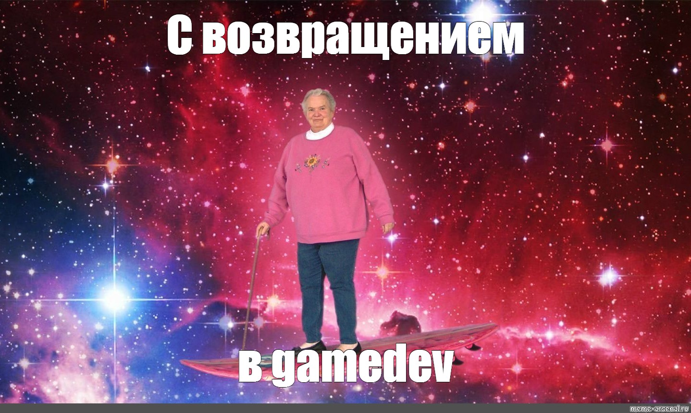

ЗАМЕТКИ НАЧИНАЮЩЕГО ГД: О ПЕРЕКВАЛИФИКАЦИИ
Рубрику " Звметки начинающего ГД" ведет начинающий гейм-дизайнер - Анастасия Лещинская, которая сегодня расскажет о трудности выбора профессии своей мечты и долгом пути в игровую индустрию. В России...

GAME MAKER С НУЛЯ, GD REVIEW И КАК МЕХАНИКИ РАССКАЗЫВАЮТ ИСТОРИИ
Манжеты ГД постоянно учавствуют на различных игровых конференциях в том или ином виде, поэтому предлагаем вашему внимани. подборку видео с нашим участием